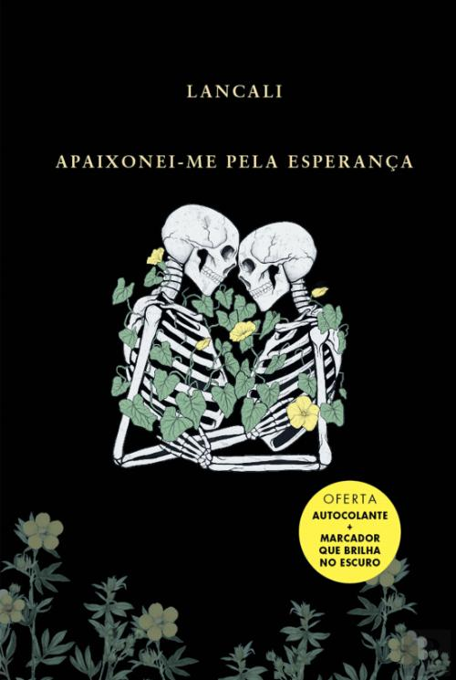

Escolheste mais respostas b)!
"Apaixonei-me pela Esperança" de Lancali é um romance comovente que narra a jornada de dois adolescentes, Sam e Camila, os quais se conhecem num hospital enquanto ambos lutam contra doenças graves. Apesar das adversidades, eles desenvolvem uma ligação profunda, com raízes na sua amizade e no seu amor, encontrando força e esperança um no outro. Esta história explora temas de coragem e resiliência, assim como o poder transformador do amor, mostrando como mesmo nas situações mais sombrias, a esperança e a conexão humana podem iluminar o nosso caminho.
 Compra em Português PT Compra em Inglês